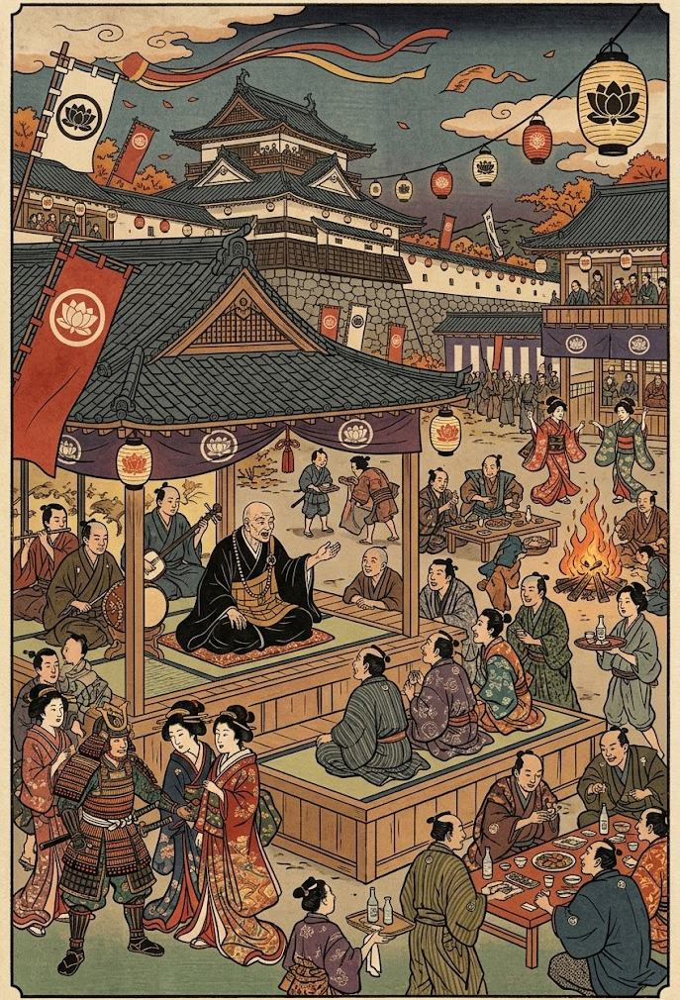

Мудрость монаха
Монах не обязан проводить всю свою жизнь только за стенами храма. Дхарма существует не только в сутрах и молитвах - она передаётся через разговор, наставление, истории и личное общение с людьми.
Монах не обязан проводить всю свою жизнь только за стенами храма. Дхарма существует не только в сутрах и молитвах - она передаётся через разговор, наставление, истории и личное общение с людьми. Поэтому любой человек или организация может пригласить монаха на своё мероприятие, собрание или встречу.
Рассказы и наставления
Монах может рассказывать истории о жизни Будды, великих учителях, прошлых поколениях монахов и различных событиях, которые помогают лучше понять Дхарму. Это может быть небольшая беседа для нескольких человек или полноценное мероприятие для большой группы людей.
Также монах может провести чтение сутр, рассказать об основах буддийского учения или объяснить отдельные его положения. Человек может спросить о Четырёх благородных истинах, карме, Нирване, Трёх драгоценностях или других частях Дхармы. Монах не обязан отвечать исключительно на вопросы об учении - он также может выслушать личную проблему человека и дать совет, опираясь на принципы Дхармы.

Участие в мероприятиях
Пригласить монаха может любой человек или организация. Для этого необходимо заранее обратиться в храм и сообщить, кто приглашает монаха, где будет проходить мероприятие, когда оно состоится и для чего требуется его присутствие. Не каждое приглашение требует участия самого Бонзы. Настоятель может назначить другого монаха, который лучше подходит для конкретной ситуации. Например, один монах может хорошо знать сутры, другой - уметь интересно рассказывать истории, а третий - обладать большим опытом наставничества. Монах остаётся представителем храма даже за его пределами. Он не должен использовать приглашение ради личной выгоды или становиться участником политических конфликтов. Если мирное мероприятие превращается в конфликт, монах вправе прекратить своё участие и покинуть место.
Мир приходит изнутри. Не ищи его снаружи.Будда Шьякмуни